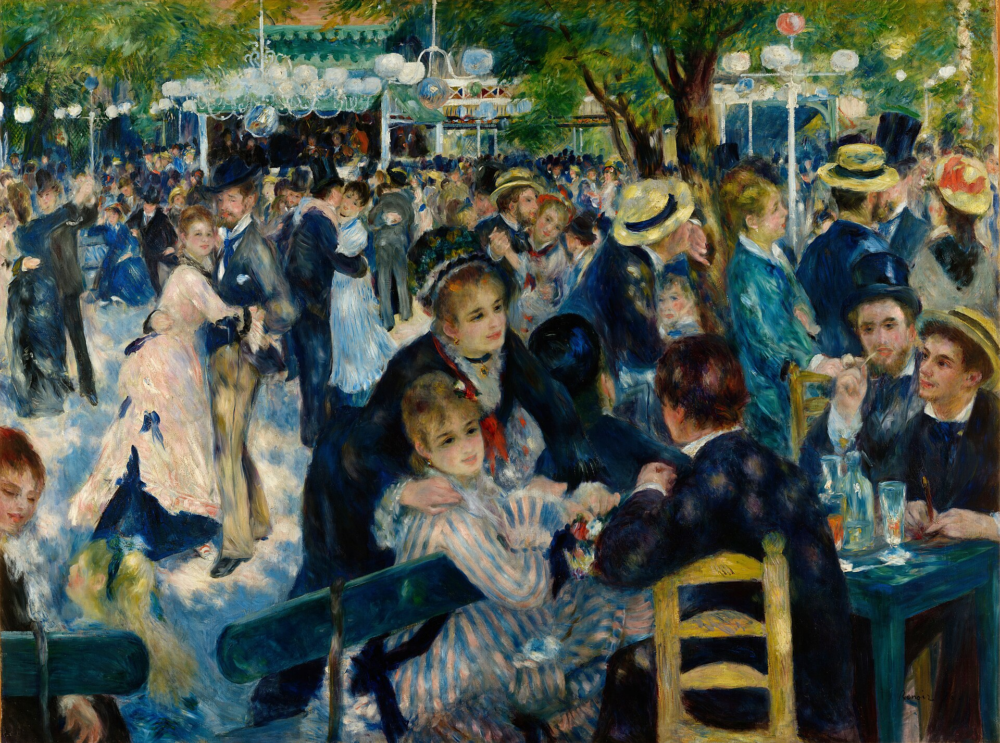
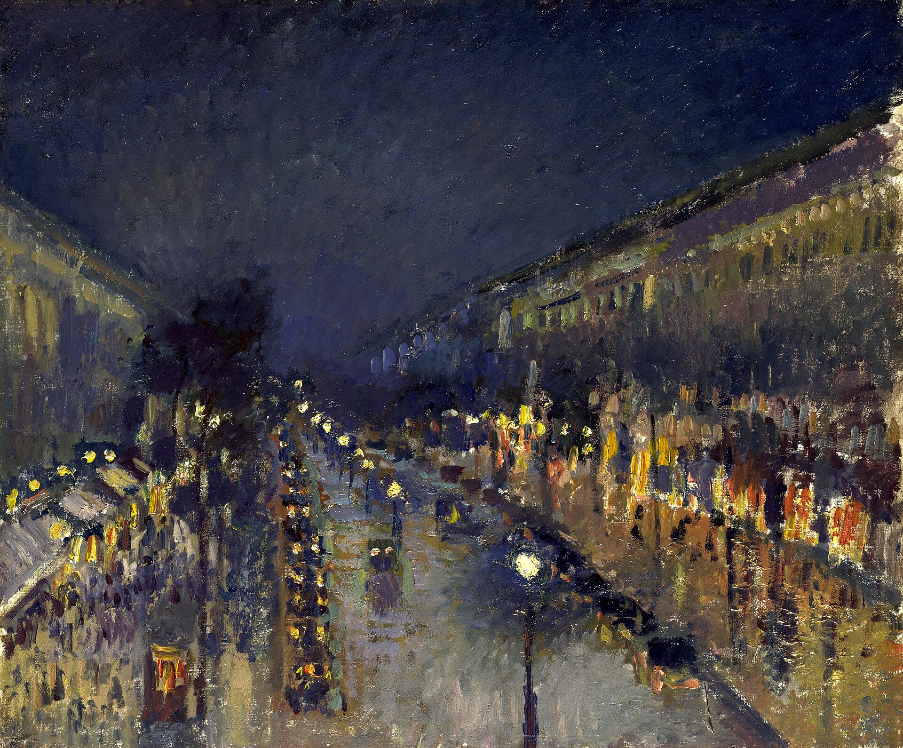
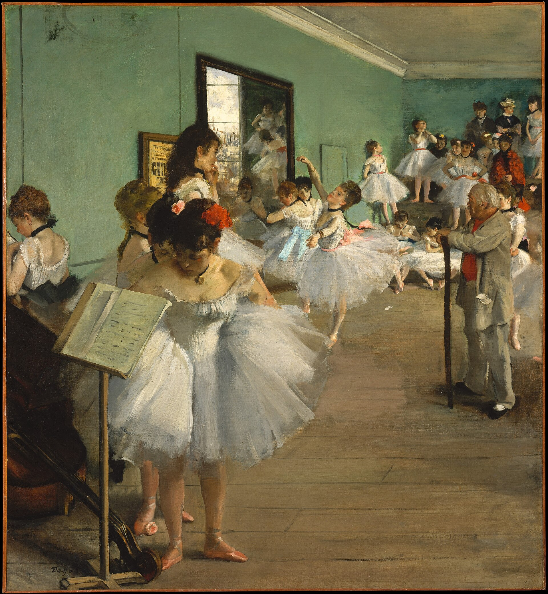
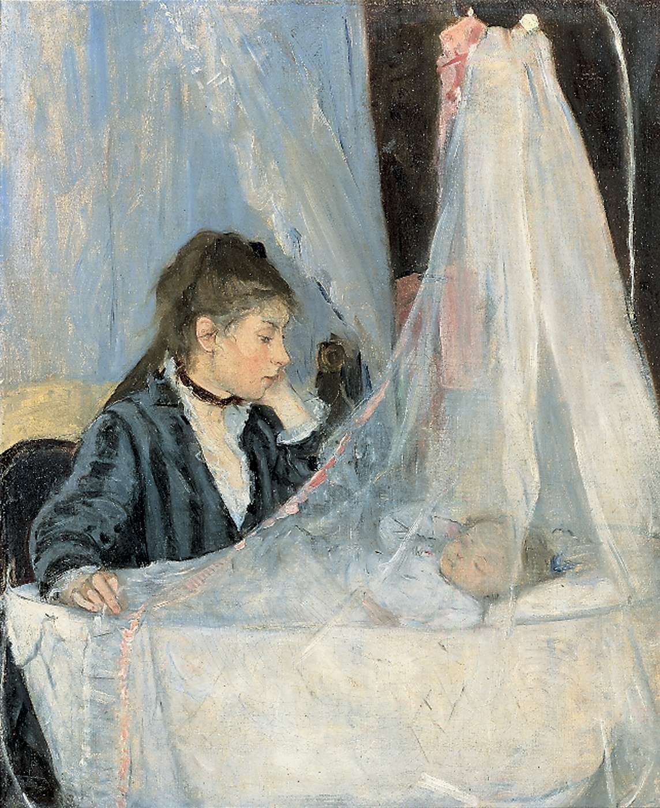
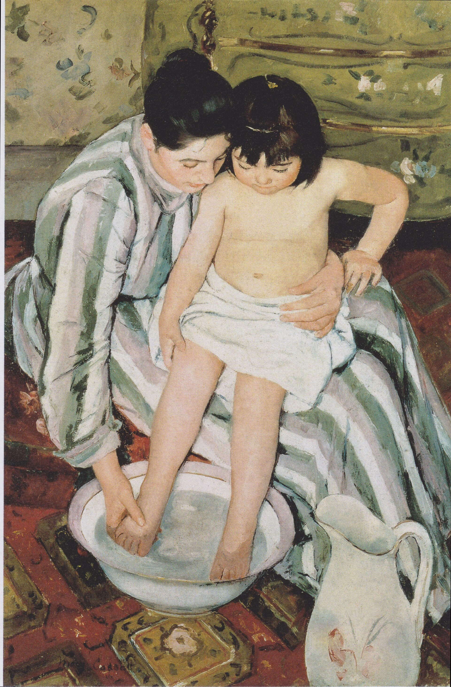
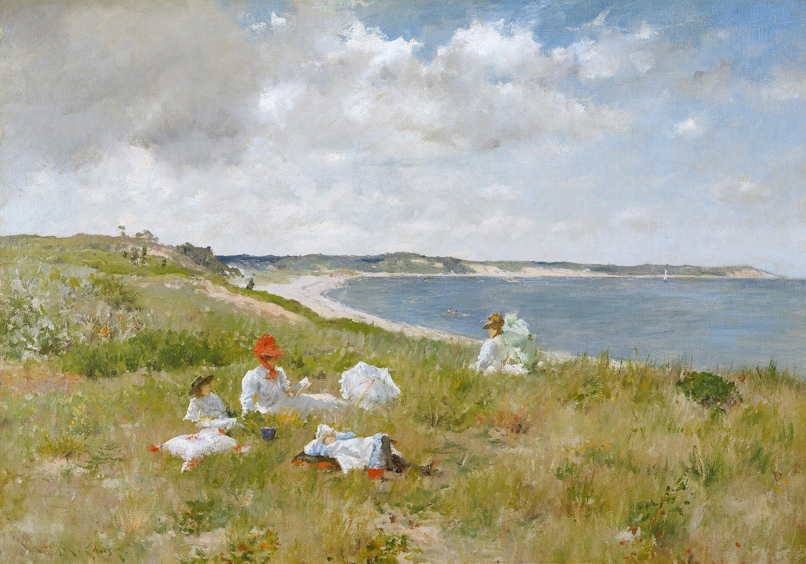

그림자도 검정이 아니라 주변 색과 반사광으로 흔들리는지 본다.
먼저 이렇게 읽어 보세요
잘린 인물, 비대칭, 지나가는 군중이 우연히 본 시각을 만드는지 본다.
철도·항구·카페·여가·돌봄이 고대 서사 없이 회화의 주제가 되는지 본다.
살롱의 심사와 별개로 동료들이 전시·관객·비평의 장을 만든 방식을 본다.
흔한 오해: 인상주의는 ‘흐릿하게 그린 그림’의 동의어가 아니다. 빠른 붓질은 빛의 변화와 시각 경험을 조직하는 선택이며, 실내·인물·도시도 중요한 주제였다.
1. 정의 — 현실을 빛과 지각의 현재로 바꾸다
인상주의는 1860년대 이후 파리의 화가들이 야외 관찰, 밝은 색채, 짧은 붓질, 현대적 구도를 통해 발전시킨 느슨하지만 강력한 전시·작업의 연대다. 사실주의가 동시대의 노동과 계급을 무엇으로 그릴지 물었다면, 인상주의는 같은 현재가 시간·날씨·관람자의 위치에 따라 어떻게 달라져 보이는지 탐구했다.
기존 제도와 기호
아카데미 살롱은 역사·신화·이상적 누드, 매끈한 마감과 완결된 구성을 높은 장르로 평가했다. 근대 생활도 다루었지만, 즉석의 붓질과 열린 화면은 미완성처럼 보일 수 있었다.
새로운 관객과 조건
철도와 교외 여가, 백화점·카페·사진·일러스트, 휴대 가능한 물감 튜브와 독립 전시는 도시 중산층의 새로운 시간 감각을 만들었다. 화가들은 주문자만이 아니라 전시 관객과 비평을 직접 상대했다.
2. 태동 — 사회적 현실에서 보는 순간의 현실로
인상주의는 사실주의가 열어 둔 ‘동시대의 삶’이라는 주제를 계승했다. 그러나 삶을 지속되는 계급·공동체의 무게로 서술하기보다, 항구의 안개와 반짝이는 물처럼 관찰이 만들어 내는 순간적 관계로 조직했다.
오스만의 파리 개조
넓어진 대로·공원·철도역·새로운 소비 공간은 걷기, 군중, 속도, 시선을 바꾸었다. 인상주의의 도시 장면은 이 근대적 환경과 함께 읽어야 한다.
보불전쟁과 파리 코뮌
전쟁과 코뮌은 파리의 예술가·시장·전시 제도를 흔들었다. 전후의 독립 전시는 국가 살롱만이 관객을 만나는 길이라는 전제를 약화시켰다.
첫 인상주의 전시
화가들은 사진가 나다르의 작업실에서 공동 전시를 열었다. ‘인상주의’라는 이름은 처음에는 비평의 조롱이었지만, 서로 다른 작업을 묶는 공개적 표지가 되었다.
01 · 태동
무게 있는 사회 서사와 안개 속 항구
도미에는 철도 객차의 계급 현실을 짙은 덩어리로 응축한다. 모네는 산업 항구를 남기되, 윤곽보다 안개와 해의 색 관계로 현재를 보이게 한다.

이전 사조의 현재
오노레 도미에, 《삼등 열차》
관찰: 밀집한 승객과 어두운 덩어리가 산업 도시의 계급적 현실을 지속되는 사회 문제로 보이게 한다.

새 사조의 해법
클로드 모네, 《인상, 해돋이》
관찰: 항구의 배와 굴뚝은 남아 있지만, 주황 해와 푸른 안개가 사물의 고정된 윤곽보다 먼저 보인다.
3. 확립 — 빛의 실험을 도시의 여러 삶으로 넓히다
공동 전시는 하나의 화풍을 강제하지 않았다. 모네의 풍경, 르누아르의 사교, 드가의 실내 노동, 모리조의 돌봄은 모두 다른 주제지만, 순간의 구도와 빛의 변화라는 질문을 공유했다. 미국에서 활동한 해섬·카사트·체이스는 이 언어를 다른 도시와 생활에 적용했다.
02 · 확립
항구의 대기에서 군중의 빛으로
모네는 항구의 대기를 최소한의 색으로 잡는다. 르누아르는 나무 그늘 아래 움직이는 사람들의 얼굴과 옷에 반짝이는 빛을 분산시켜, 현대 여가를 변화하는 시각 경험으로 만든다.
빛의 초기 실험
클로드 모네, 《인상, 해돋이》
관찰: 짧은 터치가 물·안개·배를 하나의 대기 안에서 엮는다.

도시 여가의 확장
피에르오귀스트 르누아르, 《물랭 드 라 갈레트의 무도회》
관찰: 잘린 군중과 나뭇잎 사이의 빛이 인물 관계를 고정된 초상 대신 지나가는 만남처럼 만든다.
4. 비판과 전환 — 순간의 인상에서 더 지속적인 질서로
인상주의의 빛과 현대성은 다음 세대에 큰 출발점이 되었지만, 일부 화가들은 순간의 인상이 화면 구조·감정·과학적 색 이론을 충분히 담지 못한다고 느꼈다. 쇠라는 인상주의의 밝은 팔레트를 계승하면서도 점묘와 계획된 구도로 더 안정된 질서를 만들었다.
03 · 비판과 전환
흩어지는 빛과 계산된 색의 질서
르누아르의 군중은 빛의 떨림 속에서 순간적으로 연결된다. 쇠라는 현대 여가를 유지하면서도 색을 분할하고 인물을 정지된 리듬으로 배열해, 후기인상주의·신인상주의의 다른 문제를 제시한다.
인상주의의 순간
르누아르, 《물랭 드 라 갈레트의 무도회》
관찰: 변화하는 빛과 시선이 화면의 통일을 만든다.

다음 사조의 대안
조르주 쇠라, 《그랑드자트섬의 일요일 오후》
관찰: 분할된 색과 멈춘 인물의 리듬이 인상주의의 빛을 더 계산되고 지속적인 구조로 바꾼다.
5. 대표 미술가 — 빛을 서로 다른 생활 세계에 적용하다
초심자 핵심
출발점과 국제적 확장
| 학습 단계 | 미술가와 분야 | 주요 활동 국가 | 고유의 특징 | 대표 작품과 연도 |
|---|---|---|---|---|
| 초심자 핵심 | 클로드 모네 · 회화 | 프랑스 | 빛과 대기를 윤곽보다 앞세워 같은 장소의 시간·날씨 변화를 탐구했다. | 《인상, 해돋이》 · 1872 |
| 초심자 핵심 | 차일드 해섬 · 회화 | 미국 | 밝은 붓질을 뉴욕의 거리·비·국가적 공공 이미지에 연결했다. | 《비 오는 날의 대로》 · 1917 |
중급 확장
사교·도시·돌봄·국제 이동
| 학습 단계 | 미술가와 분야 | 주요 활동 국가 | 고유의 특징 | 대표 작품과 연도 |
|---|---|---|---|---|
| 중급 확장 | 피에르오귀스트 르누아르 · 회화 | 프랑스 | 피부와 사교 장면에 따뜻한 빛을 분산시켰다. | 《물랭 드 라 갈레트의 무도회》 · 1876 |
| 중급 확장 | 카미유 피사로 · 회화 | 프랑스 | 전시 동료를 연결하며 농촌과 도시를 연작으로 관찰했다. | 《밤의 몽마르트르 대로》 · 1897 |
| 중급 확장 | 에드가 드가 · 회화·파스텔 | 프랑스 | 잘린 구도와 비대칭으로 도시 실내와 훈련 중인 몸을 포착했다. | 《무용 수업》 · 1874 |
| 중급 확장 | 베르트 모리조 · 회화 | 프랑스 | 빠른 밝은 붓질로 돌봄과 사적 공간을 현대성의 주제로 만들었다. | 《요람》 · 1872 |
| 중급 확장 | 메리 카사트 · 회화·판화 | 미국·프랑스 활동 | 일본 판화의 시점과 인상주의 색채를 여성의 생활 경험에 결합했다. | 《아이의 목욕》 · 1893 |
| 중급 확장 | 윌리엄 메릿 체이스 · 회화·교육 | 미국 | 야외의 밝은 붓질을 미국의 여가와 미술 교육에 정착시켰다. | 《한가한 시간》 · 1894 |
7. 대표작 카드
대표 미술가 표와 같은 순서다. 각 카드에서 빛·구도·현대 생활 중 무엇이 핵심인지 확인해 보세요.

중급 확장
피에르오귀스트 르누아르, 《물랭 드 라 갈레트의 무도회》
선정 이유: 도시인의 여가와 인물 관계에 빛을 적용한다.
흩어진 햇빛이 얼굴·옷·군중을 고정된 초상 아닌 순간의 만남으로 만든다.




